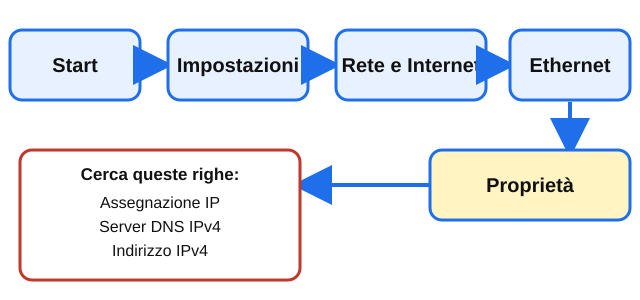

PASSO 2 · Il mio PC: DHCP o manuale?
Niente comandi: clicchi e leggi. Se ti sbagli non succede niente: si torna indietro (succede a tutti, anche ai professionisti).
La pagina viene aggiornata spesso durante la lezione: premi F5 per vedere la versione nuova.
Vinci subito: il tuo PC usa il DHCP?

- Clicca il bottone Start in basso a sinistra.
- Clicca l'ingranaggio Impostazioni.
- Clicca Rete e Internet.
- Clicca Ethernet (se il PC ha il cavo) o Wi-Fi: scegli quello con scritto «Connesso».
- Clicca Proprietà.
- Cerca la riga Assegnazione IP. Leggi: dice Automatica (DHCP) o Manuale?
FATTO! Sai se il tuo PC usa il DHCP o un IP scritto a mano.
Poi: IP e DNS
- Nella stessa pagina, trova Indirizzo IPv4: copia il numero con gli occhi.
- Trova Server DNS IPv4: ci sono il DNS preferito e, se c'è, l'alternativo.
- Se compare, leggi la durata del contratto (il tempo in cui il router ti presta l'IP). Se non compare, va bene: scrivi «non compare».
FATTO! Hai IP e DNS del tuo PC.
Si può usare il numero al posto del nome
- Nel browser, in alto, clicca la barra dell'indirizzo, scrivi 8.8.8.8 e premi Invio. Guarda che pagina si apre: è il servizio DNS di Google.
- Apri una nuova scheda con Ctrl + T, scrivi 1.1.1.1 e premi Invio. Guarda che pagina si apre: è un altro servizio DNS.
- Ora scrivi il nome dns.google e premi Invio. Si apre la stessa pagina di 8.8.8.8? Il nome e il numero portano nello stesso posto: il DNS fa questa traduzione.
FATTO! Hai visto che un numero IP e un nome possono aprire lo stesso sito.
Fallo tuo: La mia mappa
Metti i tuoi dati in una scheda e premi un solo bottone: arriva al Professore e al tuo andamento. Non copi e non incolli niente.
Apri La mia mappaLa pagina viene aggiornata spesso durante la lezione: premi F5 per vedere la versione nuova.